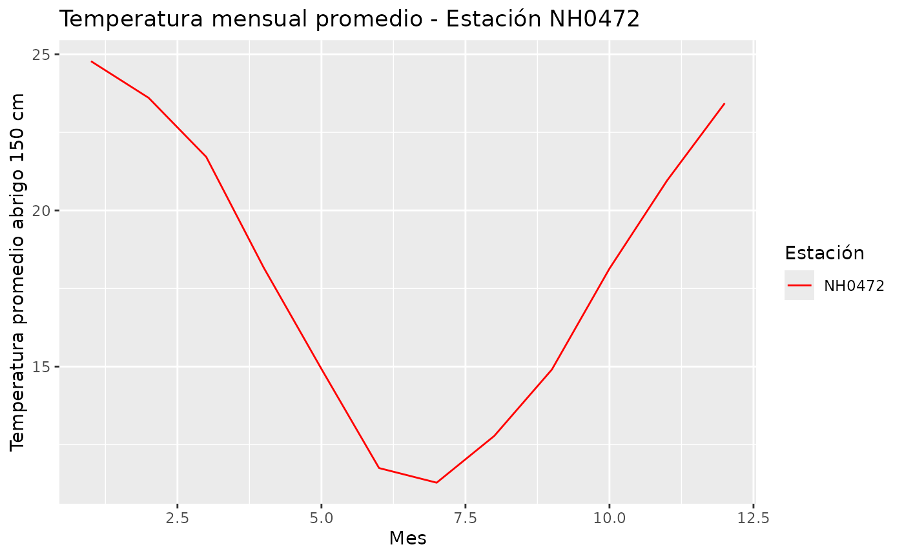
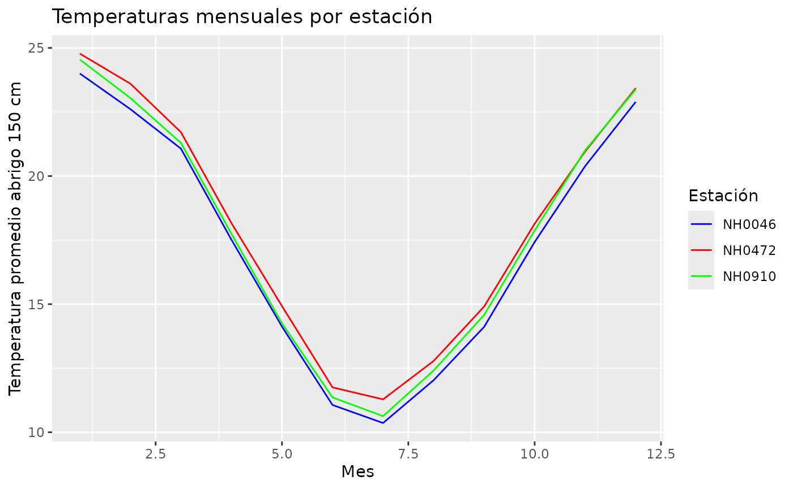

Introducción
En esta viñeta se muestra cómo usar las funciones del paquete para trabajar con los datos meteorológicos del INTA – SIGA. El paquete incluye funciones para descargar datos de distintas estaciones, generar resúmenes de temperatura y graficar resultados.
Las tres funciones principales son:
descargar_leer_estaciones()
tabla_resumen_temperatura()
grafico_temperatura_mensual()
Instalación del paquete
Antes de poder ejecutar el código de esta viñeta, es necesario instalar el paquete que estamos desarrollando en tu computadora.
Cargar el paquete
Una vez instalado, cargalo con:
Descargar y leer datos de una estación
La función descargar_leer_estaciones() sirve para descargar y leer los datos meteorológicos de una estación del INTA.
Primer argumento: el código (id) de la estación, por ejemplo “NH0472”.
Segundo argumento: la ruta o carpeta donde se guardarán los datos (por ejemplo “datos/estacionNH0472.csv”).
Descargar y leer los datos de la estación NH0472
estacion1 <- descargar_leer_estaciones("NH0472", "../estacionNH0472.csv")
#> ✔ El archivo ya existía en ../estacionNH0472.csv.
#> ℹ Leyendo datos de la estación NH0472
#> Rows: 20425 Columns: 35
#> ── Column specification ────────────────────────────────────────────────────────
#> Delimiter: ","
#> chr (1): id
#> dbl (18): temperatura_abrigo_150cm, temperatura_abrigo_150cm_maxima, temper...
#> lgl (15): temperatura_suelo_5cm_media, temperatura_suelo_10cm_media, temper...
#> date (1): fecha
#>
#> ℹ Use `spec()` to retrieve the full column specification for this data.
#> ℹ Specify the column types or set `show_col_types = FALSE` to quiet this message.Si el archivo ya está guardado en esa ruta, la función no lo vuelve a descargar; simplemente lo lee desde el archivo existente. El resultado es un conjunto de datos (data frame o tibble) con las variables meteorológicas medidas en esa estación.
Crear una tabla resumen de temperatura
Una vez que tenemos los datos, podemos generar un resumen estadístico de la temperatura con tabla_resumen_temperatura().
Esta función calcula, para cada estación:
Promedio de la temperatura a 150 cm
Desvío estándar
Temperatura máxima
Temperatura mínima
resumen_temp <- tabla_resumen_temperatura(estacion1)
resumen_temp
#> # A tibble: 1 × 5
#> id promedio_temperatura desvio_estandar temp_max temp_min
#> <chr> <dbl> <dbl> <dbl> <dbl>
#> 1 NH0472 18.0 5.94 42.1 -8El resultado es una tabla que muestra estas medidas resumidas. Esto permite tener una idea rápida del comportamiento térmico de la estación a lo largo del tiempo.
Graficar la temperatura mensual promedio
La función grafico_temperatura_mensual() permite visualizar las temperaturas promedio mensuales de una o varias estaciones.
Argumento 1: el conjunto de datos de las estaciones.
Argumento 2: un vector con los colores a usar en el gráfico.
Argumento 3 (opcional): un título para el gráfico.
grafico_temperatura_mensual(estacion1, c("red"), "Temperatura mensual promedio - Estación NH0472")
Si no se indican suficientes colores para todas las estaciones, la función asigna colores aleatorios automáticamente. El resultado es un gráfico de líneas que muestra cómo varía la temperatura promedio por mes.
Ejemplo completo con varias estaciones
Podemos combinar todo el flujo anterior para comparar distintas estaciones.
Descargar los datos de tres estaciones distintas
est1 <- descargar_leer_estaciones("NH0472", "../estacionNH0472.csv")
#> ✔ El archivo ya existía en ../estacionNH0472.csv.
#> ℹ Leyendo datos de la estación NH0472
#> Rows: 20425 Columns: 35
#> ── Column specification ────────────────────────────────────────────────────────
#> Delimiter: ","
#> chr (1): id
#> dbl (18): temperatura_abrigo_150cm, temperatura_abrigo_150cm_maxima, temper...
#> lgl (15): temperatura_suelo_5cm_media, temperatura_suelo_10cm_media, temper...
#> date (1): fecha
#>
#> ℹ Use `spec()` to retrieve the full column specification for this data.
#> ℹ Specify the column types or set `show_col_types = FALSE` to quiet this message.
est2 <- descargar_leer_estaciones("NH0910", "../estacionNH0910.csv")
#> ✔ El archivo ya existía en ../estacionNH0910.csv.
#> ℹ Leyendo datos de la estación NH0910
#> Rows: 15553 Columns: 35
#> ── Column specification ────────────────────────────────────────────────────────
#> Delimiter: ","
#> chr (1): id
#> dbl (5): temperatura_abrigo_150cm, temperatura_abrigo_150cm_maxima, temper...
#> lgl (28): temperatura_intemperie_5cm_minima, temperatura_intemperie_50cm_mi...
#> date (1): fecha
#>
#> ℹ Use `spec()` to retrieve the full column specification for this data.
#> ℹ Specify the column types or set `show_col_types = FALSE` to quiet this message.
est3 <- descargar_leer_estaciones("NH0046", "../estacionNH0046.csv")
#> ✔ El archivo ya existía en ../estacionNH0046.csv.
#> ℹ Leyendo datos de la estación NH0046
#> Rows: 17041 Columns: 35
#> ── Column specification ────────────────────────────────────────────────────────
#> Delimiter: ","
#> chr (2): id, direccion_viento_1000cm
#> dbl (24): temperatura_abrigo_150cm, temperatura_abrigo_150cm_maxima, temper...
#> lgl (8): temperatura_inte_5cm, temperatura_intemperie_150cm_minima, humeda...
#> date (1): fecha
#>
#> ℹ Use `spec()` to retrieve the full column specification for this data.
#> ℹ Specify the column types or set `show_col_types = FALSE` to quiet this message.Unir los datos en un solo tibble
todas_estaciones <- dplyr::bind_rows(est1, est2, est3)Crear un resumen
resumen_todas <- tabla_resumen_temperatura(todas_estaciones)
resumen_todas
#> # A tibble: 3 × 5
#> id promedio_temperatura desvio_estandar temp_max temp_min
#> <chr> <dbl> <dbl> <dbl> <dbl>
#> 1 NH0046 17.3 5.90 41.5 -15
#> 2 NH0472 18.0 5.94 42.1 -8
#> 3 NH0910 17.7 6.12 43 -8.5Graficar las temperaturas mensuales
grafico_temperatura_mensual(todas_estaciones, c("blue", "red", "green"),"Temperaturas mensuales por estación")
Este flujo completo permite:
Descargar los datos automáticamente.
Analizarlos con un resumen estadístico.
Visualizarlos de manera clara con un gráfico.